Acquisitions
The Koha Acquisitions module provides a way for the library to record orders placed with vendors and manage purchase budgets.
- Get there: More > Acquisitions
Setup
Before using the Acquisitions module you will want to make sure that you have completed all of the set up.
First, set your acquisitions system preferences and acquisitions administration to match your library’s workflow. Before setting your EDI accounts and Library EANs you will need to have entered your vendors.
On the main acquisitions page you will see your library’s funds listed.
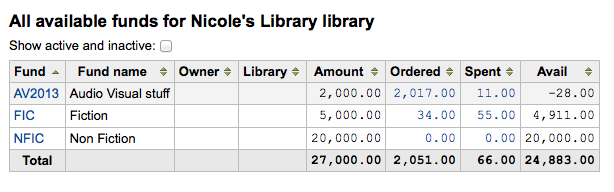
Note
If the total line is confusing for the funds you have set up you can hide it by adding
#funds_total {display:none;}to the IntranetUserCSS preference.
To see all active funds you can click the checkbox next to ‘Show active and inactive’ above the funds table.
To see a history of all orders in a fund you can click on the linked amount and it will run a search for you.
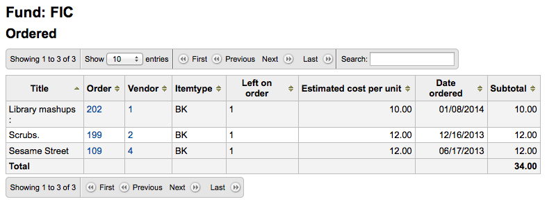
Learn more in the Budget/fund tracking section of this manual.
Vendors
Before any orders can be placed you must first enter at least one vendor.
Add a vendor
To add a vendor click the ‘New vendor’ button on the Acquisitions page
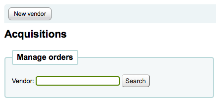
The vendor add form is broken into three pieces
The first section is for basic information about the vendor
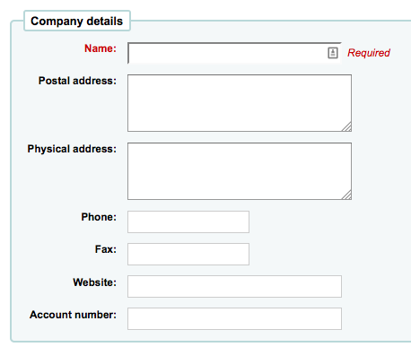
- Of these fields, only the vendor name is required, the rest of the information should be added to help with generating claim letters and invoices
The second section is for information regarding your contact at the vendor’s office
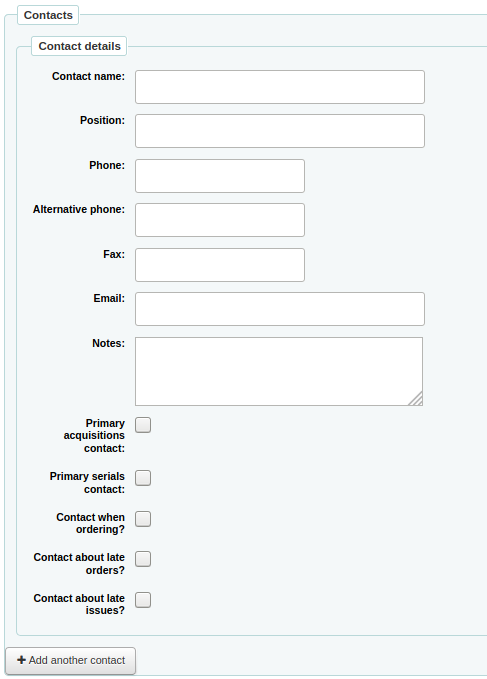
None of these fields are required, they should only be entered if you want to keep track of your contact’s information within Koha
- Primary acquisitions contact: check this box if this person is your primary contact regarding acquisitions from this vendor
- Primary serials contact: check this box if this person is your primary contact regarding serial acquisitions from this vendor
- Contact when ordering? check this box if you want to be able to send your orders by email directly to this person
- Contact about late orders? check this box if you want to be able to send your acquisitions claims by email directly to this person
- Contact about late issues? check this box if you want to be able to send your serials claims by email directly to this person
You can add more than one contact per vendor by clicking on the ‘Add another contact’ button
The final section is for billing information
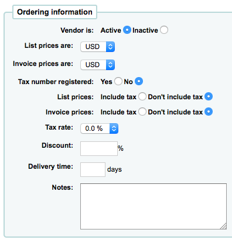
- To be able to order from a vendor you must make them ‘Active’
- For list prices and invoice prices choose the currency
- Currencies are assigned in the Currencies and exchange rates admin area
- If your library is charged tax mark your tax number as registered
- Note if you list prices and/or invoice prices include tax
- If the vendor offers a consistent blank discount, enter that in
the ‘Discount’ field
- You can enter item specific discounts when placing an order
- Enter your tax rate if your library is charged taxes on orders
- If you know about how long it usually takes orders to arrive from this vendor you can enter a delivery time. This will allow Koha to estimate when orders will arrive at your library on the late orders report.
- Notes are for internal use
View/edit a vendor
To view a vendor’s information page you must search for the vendor from the Acquisitions home page. Your search can be for any part of the vendor’s name:
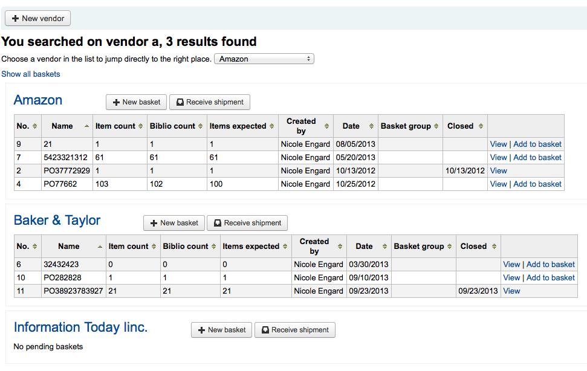
From the results, click on the name of the vendor you want to view or edit
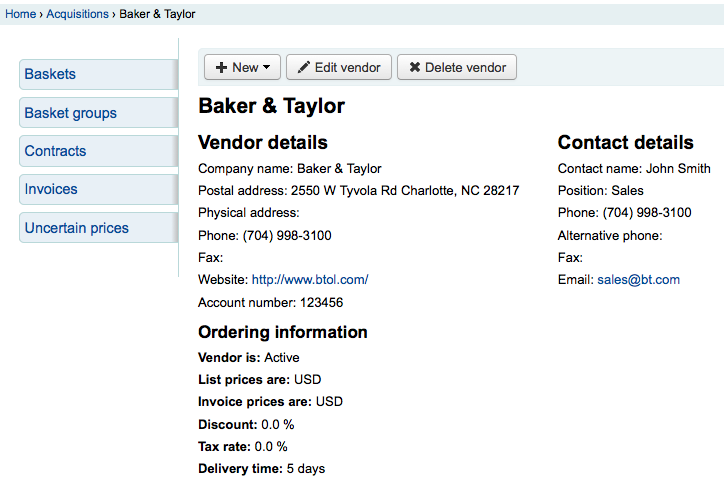
To make changes to the vendor, simply click the ‘Edit vendor’ button.
If the vendor has no baskets attached to it then a ‘Delete vendor’ button will also be visible and the vendor can be deleted. Otherwise you will see a ‘Receive shipment’ button.
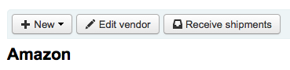
Vendor contracts
You can define contracts (with a start and end date) and attach them to a vendor. This is used so that at the end of the year you can see how much you spent on a specific contract with a vendor. In some places, contracts are set up with a minimum and maximum yearly amount.
Add a contract
At the top of a vendor information Page, you will see a ‘New contract’ button.
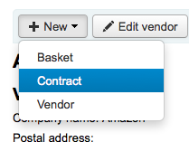
The contract form will ask for some very basic information about the contract
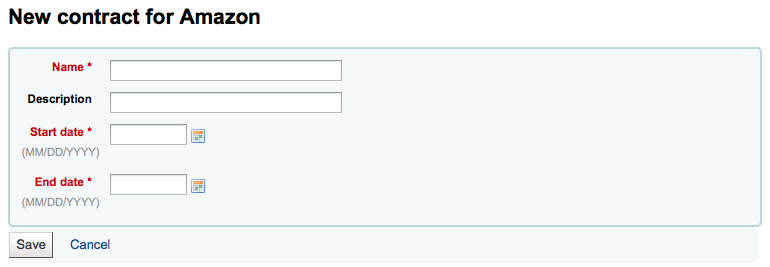
Important
You cannot enter a contract retrospectively. The end date must not be before today’s date.
Once the contract is saved it will appear below the vendor information.
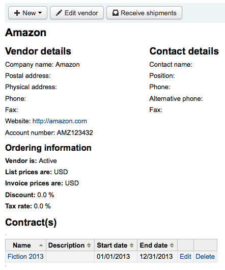
It will also be an option when creating a basket
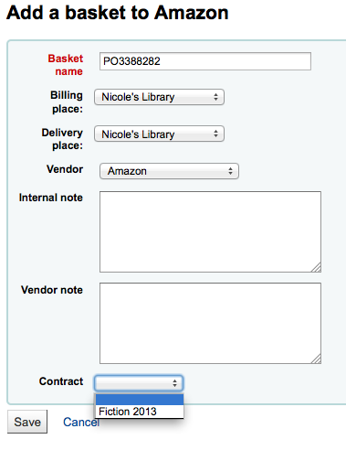
Managing purchase suggestions
Purchase suggestions can be generated in one of two ways. You can create suggestions via the staff client either for the library or on the patron’s behalf from their record. Depending on your settings in the suggestion system preference, patrons may also be able to make purchase suggestions via the OPAC.
Note
You need to be logged in as a staff member with the suggestions_manage acquisitions permission in order to view and work with purchase suggestions.
If you have the suggestions_manage permission but not Acquisitions permissions you can access the suggestion management tool from Suggestions under the More menu in the header bar.
When a suggestion is waiting for library review, it will appear on the Acquisitions home page next to the vendor search. Clicking ‘Manage suggestions’ will take you to the suggestion management tool.
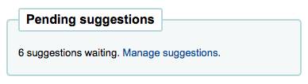
It will also appear on the main staff dashboard under the module labels:
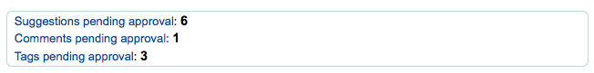
If there are no pending suggestions you can access the suggestion management tool by clicking the ‘Manage suggestions’ link on the menu on the left of the Acquisitions page.
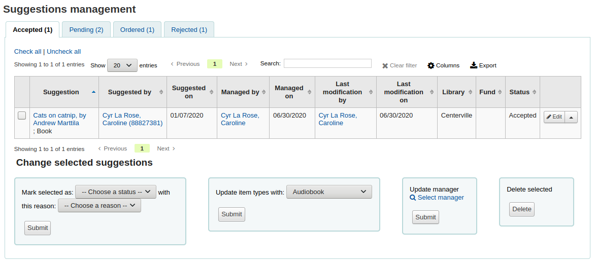
Note
- You can customize the columns of this table in the ‘Table settings’ section of the Administration module (table id: suggestions).
Your suggestions will be sorted into several tabs: Accepted, Pending, Checked, Ordered and/or Rejected. Each accepted or rejected suggestion will show the name of the librarian who managed the suggestion and the reason they gave for accepting or rejecting it (found under ‘Status’).
An ‘Accepted’ suggestion is one that you have marked as ‘Accepted’ using the form below the suggestions. A ‘Pending’ suggestion is one that is awaiting action from the library. A ‘Checked’ suggestion is one that has been marked as ‘Checked’ using the form before the suggestions. An ‘Ordered’ suggestion is on that has been ordered using the ‘From a purchase suggestion’ link in your basket. A ‘Rejected’ suggestion is one that you have marked at ‘Rejected’ using the form below the list of suggestions.
For libraries with lots of suggestions, there are filters on the left hand side of the Manage Suggestions page to assist in limiting the number of titles displayed on the screen.
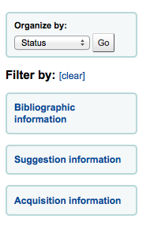
Clicking on the blue headings will expand the filtering options and clicking ‘[clear]’ will clear all filters and show all suggestions.
Note
The suggestions page will automatically be limited to suggestions for your library. To see information for all (or any other) libraries click on the ‘Acquisition information’ filter and change the library.
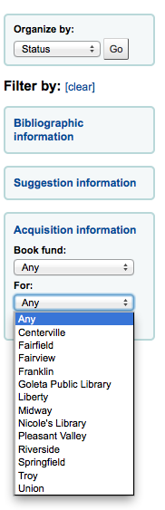
When reviewing ‘Pending’ suggestions you can choose to check the box next to the item(s) you want to approve/reject and then choose the status and reason for your selection.
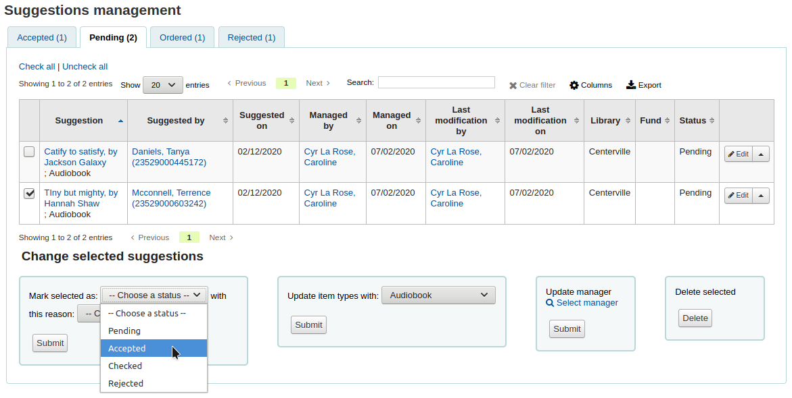
Reasons for accepting and rejecting suggestions are defined by the SUGGEST authorized value.
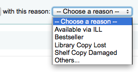
If you choose ‘Others…’ as your reason you will be prompted to enter your reason in a text box. Clicking ‘Cancel’ to the right of the box will bring back the pull down menu with authorized reasons.
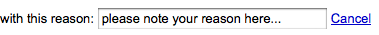
You can also change the item type of the suggestions by selecting them and choosing the new item type in the ‘Update item types with’ drop down menu.
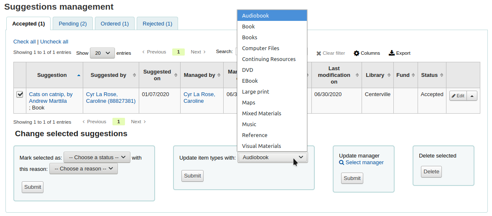
You can also change the manager of the selected suggestions by clicking the ‘Select manager’ link and searching your user database. Note that only users who have the ‘superlibrarian’ or the ‘suggestions_manage’ permission will show in the results. The new manager will receive the NOTIFY_MANAGER notice.
You can also choose to completely delete the selected suggestions by clicking the ‘Delete’ button in the the ‘Delete selected’ box.
Another option for libraries with long lists of suggestions is to approve or reject suggestions one by one by clicking on the title of the suggestion to open a summary of the suggestion, including information if the item was purchased.
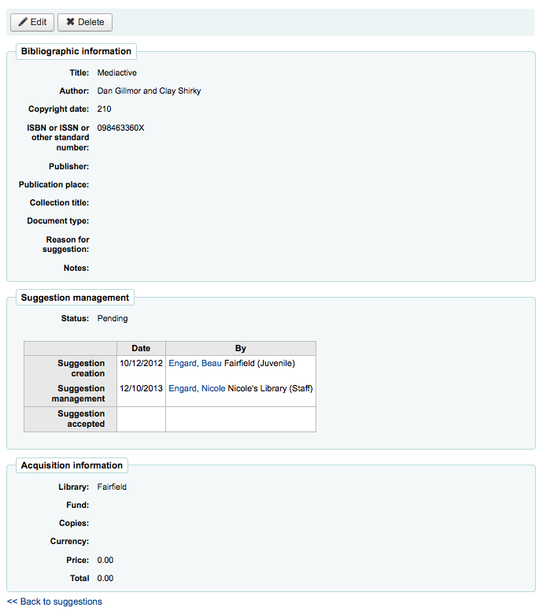
Clicking ‘edit’ to the right of the suggested title or at the top of the suggestion detail page will open a suggestion editing page.
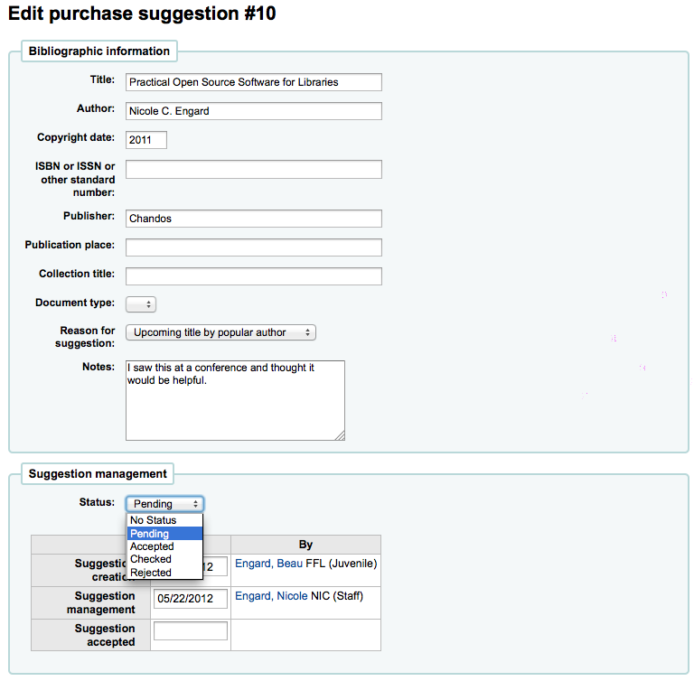
From this form you can make edits to the suggestion (adding more details or updating incorrect information provided by the patron). You can also choose to accept or reject the suggestion on an individual basis.
- Choosing to mark a request as ‘Pending’ will move the request back to the ‘Pending’ tab.
You can also assign this suggestion to a fund.
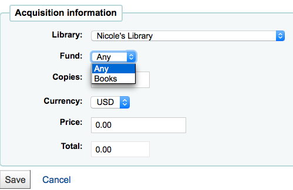
This edit can trigger a notice (defined in the Notices & slips tool with the TO_PROCESS notice) to the fund owner that there is a suggestion ready for them to manage if you have turned on the cron job to generate these notices.
Once you have clicked ‘Submit’ the suggestion will be moved to the matching tab. The status will also be updated on the patron’s account in the OPAC and an email notice will be sent to the patron using the template that matches the status you have chosen.
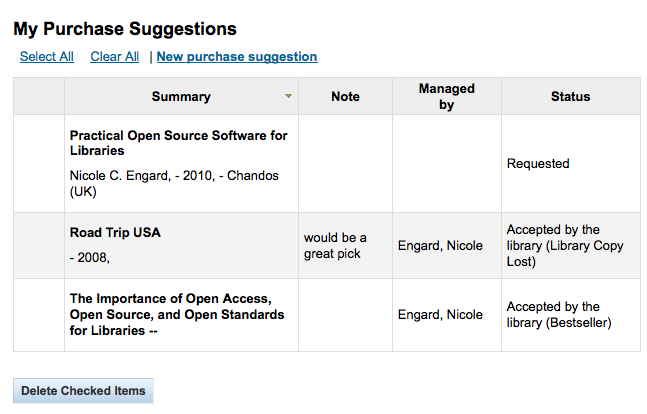
Once the suggestion has completed the acquisitions process, it is possible to archive it by clicking the small arrow next to the ‘Edit’ button and choosing ‘Archive’. This will remove it from the search results. If you have a lot of suggestions, and the page takes a long time to load, archiving old suggestions will improve the performance.
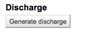
Placing orders
To place an order you must first search for the vendor or bookseller you want to send the order to.
Important
If you are planning on using EDIFACT to submit your order you will need to first set up your library’s EDI accounts and EANs.
Create a basket
Note
If you’re using EDI for ordering you will want to download your order record from your vendor before starting the process in Koha.
To create a basket you must first search for the vendor you’re ordering from:
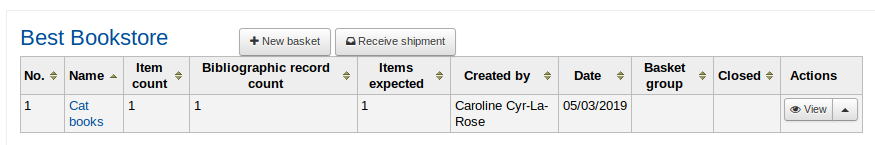
And click the ‘New basket’ button to the right of the vendor name.
Note
You can also add to an existing basket by clicking the arrow next to the ‘View’ button at the far right of each basket’s information in the results table, and choosing ‘Add to basket’.
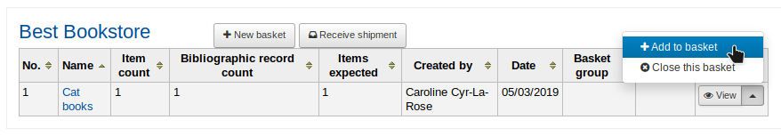
After clicking ‘New basket’ you will be asked to enter some information about the order:
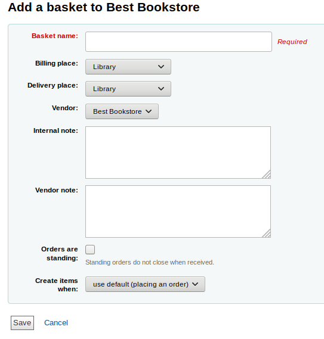
- When adding a basket you want to give it a name that will help you identify it later
- Enter in the billing place and delivery place (this will default the library you’re logged in at)
- If you would like to change the vendor you’re ordering from you can use the Vendor pull down menu
- The notes fields are optional and can contain any type of information
- If you’re ordering standing items (items which arrive regularly) then
you will want to check the ‘Orders are standing’ box for this basket.
- Note that any one basket cannot contain both firm and standing orders.
- You can choose to create items either upon placing the order, upon receiving the order, or upon cataloging the item. If you choose an option other than the default, it will apply only to this basket. The default is set by the AcqCreateItem system preference.
If you have added contracts to the vendor you’re ordering from, you will also have an option to choose which contract you’re ordering these items under.
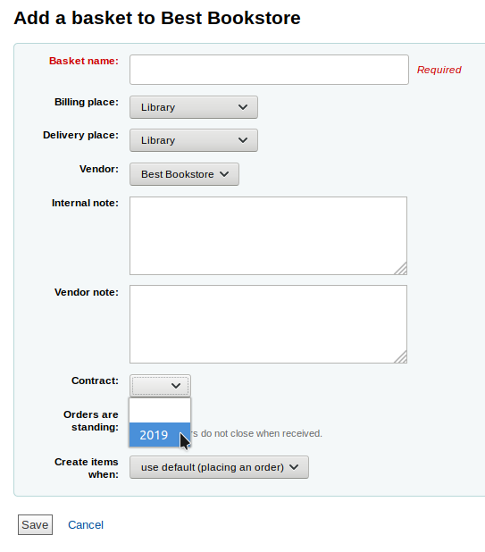
When finished, click ‘Save’.
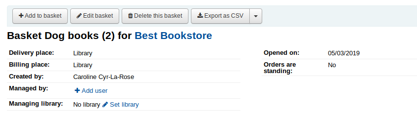
Once your basket is created, click on ‘Add to basket’ you are presented with several options for adding items to the order.
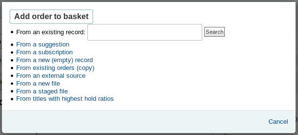
Adding materials to the basket
Order from an existing record
If you are ordering another copy of an existing item, you can simply search for the record in your system.
From the results, you can click ‘Add order’ to be brought to the order form.
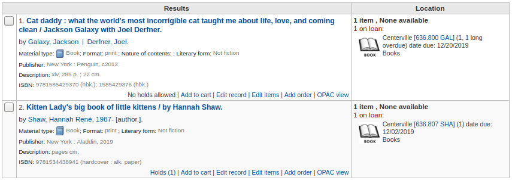
From the record’s detailed view, you can click on the ‘Add order’ button.
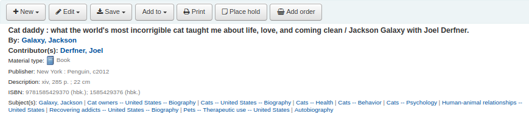
You will be brought to the order form
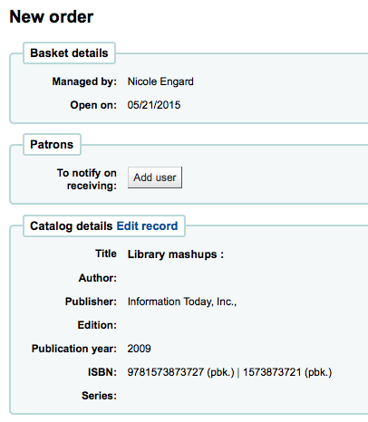
- All of the details associated with the item will already be listed under ‘Catalog details.’
Order from a purchase suggestion
If you allow patrons to make purchase suggestions (learn more in the managing purchase suggestions section of this manual), then you can place orders from those suggestions. In order to keep track of suggestions that have been ordered and received you must place the order using this link.
Important
Suggestions must be accepted before you can order them.
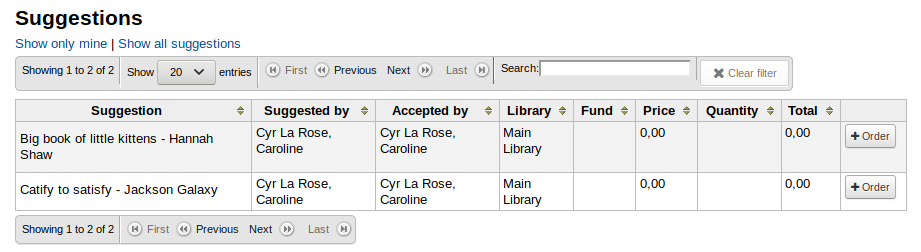
From the results, click ‘Order’ next to the item you want to order and you will be presented with the order form including a link to the suggestion
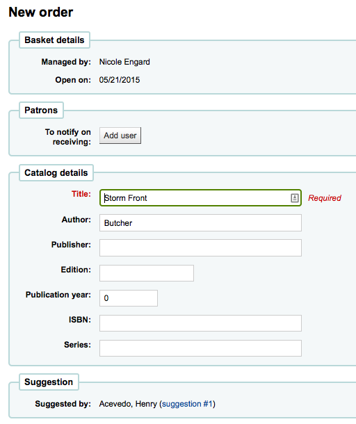
From this form you can make changes to the catalog details if necessary.
When the item appears in your basket it will include a link to the suggestion.
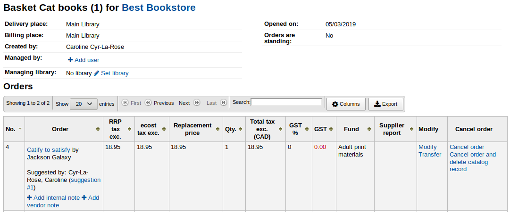
Orders added to the basket in this way will notify the patron via email that their suggestion has been ordered (with the ‘ORDERED’ notice in Tools > Notices & slips) and will update the patron’s ‘your purchase suggestions’ page in the OPAC.
Order from a serial subscription
If you’re using the Serials module you can link your subscription order information to acquisitions by choosing to order ‘From a subscription’
After clicking the order link you will be brought to a search page that will help you find your subscription
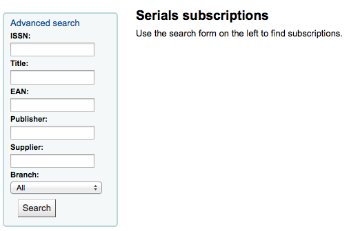
Your results will appear to the right of the form and each subscription will have an ‘Order’ link to the right
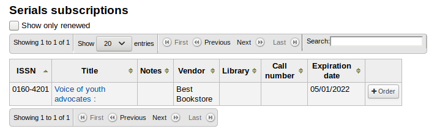
Clicking ‘Order’ will bring the subscription info in to the order form without an ‘Add item’ section since you are just ordering a subscription and an item isn’t needed
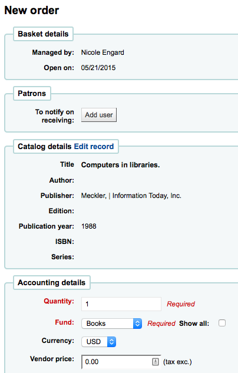
Order from a new (empty) record
To order from a record that can’t be found anywhere else, choose the ‘From a new (empty) record’ option.
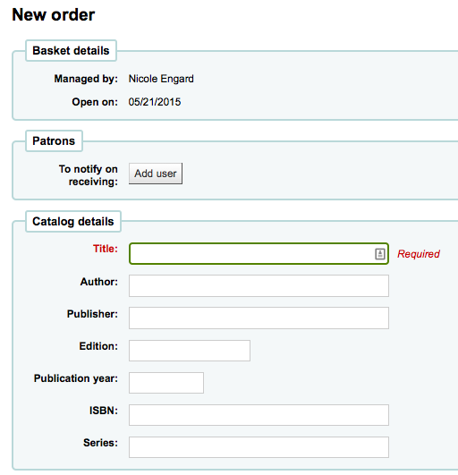
You will be presented with an empty form to fill in all of the necessary details about the item you are ordering.
Note
If the default form does not have catalog details fields necessary to place an order, enable the UseACQFrameworkForBiblioRecords preference which will allow the ACQ MARC framework to customize the display of fields when ordering.
Duplicate orders (order from existing orders)
You can duplicate an existing order line by choosing the ‘From existing orders (copy)’ option.
You will be presented with a search form to search your existing orders.
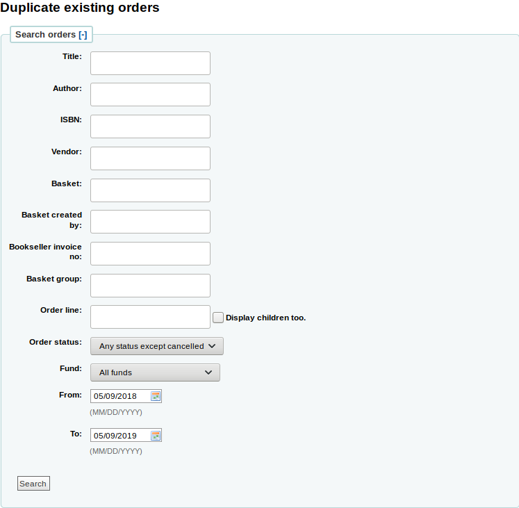
Check the boxes next to the order(s) you want to duplicate.
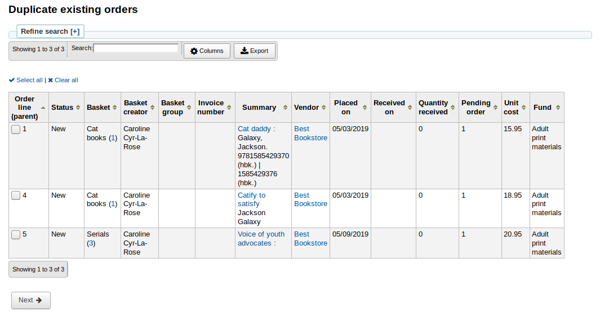
Order from an external source
If you want to search other libraries for an item to purchase, you can use the ‘From an external source’ option that will allow you to order from a MARC record found via a Z39.50 search.
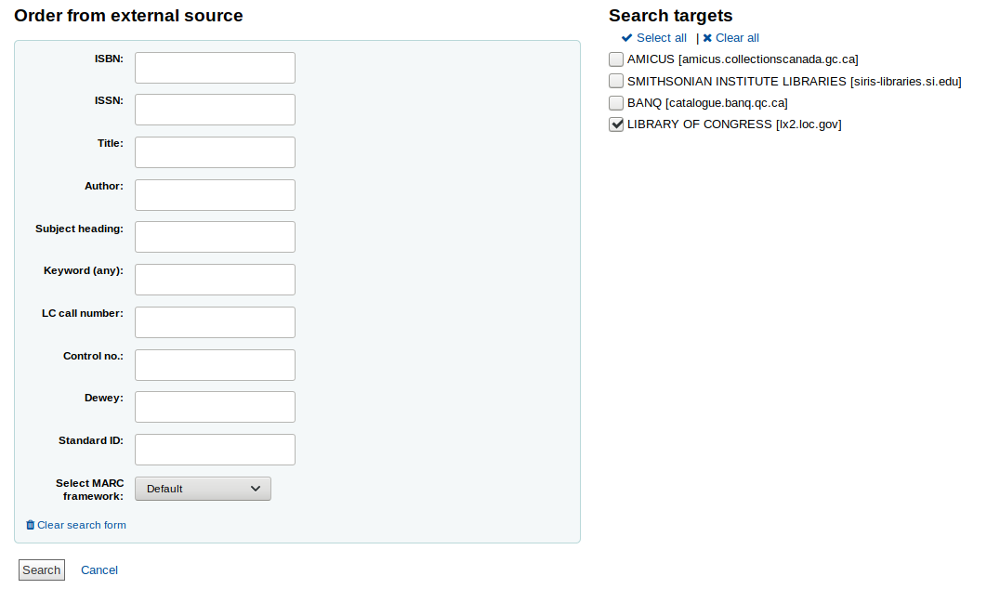
From the results, click the ‘Order’ button next to the item you want to purchase.
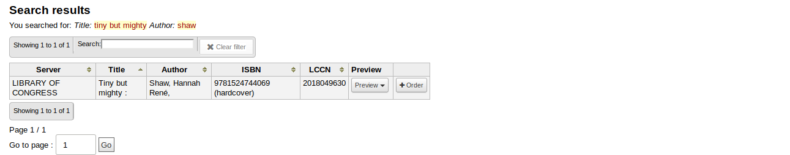
If the item you’re ordering from an external source looks like it might be a duplicate, Koha will warn you and give you options on how to proceed.
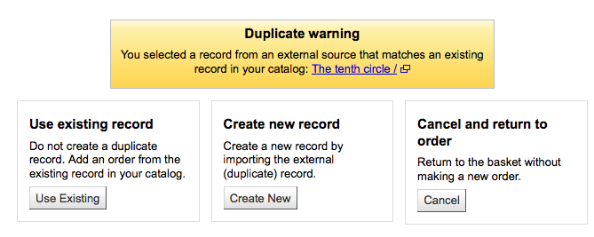
- From the warning, you can choose to order another copy on the existing bibliographic record, create a new bibliographic record, or cancel your order of this item.
In the order form that pops up, you will not be able to edit the catalog details.
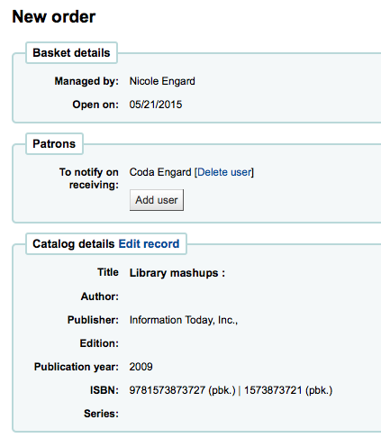
Order from a new file
If your vendor sent you a record file (a .mrc file for example), you can add orders using the records in that file. Choose the ‘From a new file’ option.
Note
Note that you need the stage_marc_import tool permission in order to be able order from a new file.
You will be taken to the Stage MARC records for import tool. Stage your file as described in that section.
Once the files are staged, you can click on the ‘Add staged files to basket’ button.
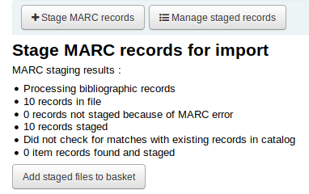
Next to each title is a checkbox, check the items you would like to order, or choose ‘Select all’ at the top. Depending on your settings in the MarcFieldsToOrder preference, Koha will populate the next screen with with the relevant Quantity, Price, Fund, Statistic 1, and Statistic 2 found within the staged file.
In the ‘Item information’ tab you can enter information that will be added to every ordered item such as item type, collection code and not for loan status.
If no information is imported in the fund information from the MARC with the MarcFieldsToOrder preference, the ‘Default accounting details’ tab can be used to apply values related to the accounting.
Order from a staged file
This option is the same as the previous one, but in this case, your file has already been staged. Whether you choose to ‘order from a new file’ or ‘order from a staged file’ will depend on your acquisitions workflow or your permissions.
Once you click on ‘From a staged file’, you will get a list of all the staged files in your system.
From the list of files you are presented with, click on the ‘Add orders’ button to add the records in the staged file to your order.
Next to each title is a checkbox, check the items you would like to order, or choose ‘Select all’ at the top. Depending on your settings in the MarcFieldsToOrder preference, Koha will populate the next screen with with the relevant Quantity, Price, Fund, Statistic 1, and Statistic 2 found within the staged file.
In the ‘Item information’ tab you can enter information that will be added to every ordered item such as item type, collection code and not for loan status.
If no information is imported in the fund information from the MARC with the MarcFieldsToOrder preference, the ‘Default accounting details’ tab can be used to apply values related to the accounting.
Order from titles with highest hold ratios
The final option for ordering is to order from a list of titles with the highest hold ratios
This option will take you to the holds ratio report where you can find items with a high hold ratio and order additional copies. Next to each title will be a button with the number of items to order, click that and it will add the item to your basket.
Setting patron notifications
With any of the above ordering options you’re presented with an option to notify patrons of the new item when it’s received. The contents of that notification can be edited in the Notices & slips tool and will have the code of ACQ_NOTIF_ON_RECEIV. In the ‘Patrons’ section you will see an option to ‘Add user’. Click that button to add patrons who will be notified of the new issue.
Patron notification search
In the window that pops up search for the patrons you’d like to notify and click ‘Add’
Once you’re done you can close the window and you’ll see the list of patrons under the ‘Patrons’ section
Adding items to materials
After bringing in the record information (for all order methods except for the staged files), if your AcqCreateItem system preference is set to add an item when ordering you will enter the item information next. You need to fill out at least one item record and then click the ‘Add item’ button at the bottom left of the item form.
After clicking the ‘Add item’ button below the item record the item will appear above the form and then you can enter your next item the same way (if ordering more than one item).
If you are ordering several items, you can click on the ‘Add multiple items’ instead of adding them one by one. This will ask you how many items you want to add. Simply enter that number in the box and click on ‘Add’.
Adding accounting details to materials
Once you have entered the info about the item, you need to enter the Accounting information.
Quantity is populated by the number of items you’ve added to the order above.
Important
If the item is created upon ordering, you will not be able to edit the quantity manually, you must click ‘Add item’ below the item form to add as many items as you’re ordering.
The list of funds is populated by the funds you have assigned in the Acquisitions administration area.
The currency pull down will have the currencies you set up in the Acquisitions administration area.
The vendor price is the price before any taxes or discounts are applied.
If the price is uncertain, check the uncertain price box.
Note
A basket with at least one uncertain price can’t be closed.
If you are charged sales tax, choose that from the ‘Tax rate’ field. This field is populated by the TaxRates system preference.
Enter the percentage discount you’re receiving on this order, once you enter this, hit tab and Koha will populate the rest of the cost fields below.
Retail price is the recommended retail price (RRP), the price set by the publisher or the manufacturer as a recommendation to booksellers.
Replacement cost is the price it will cost to replace the item. This is the price charged to the user when an item is declared lost (if the WhenLostChargeReplacementFee system preference is set to ‘Charge’).
Budgeted cost is the amount that will be removed from the ‘spent’ budget. Whether this number includes or excludes taxes will depend on the ‘List price’ setting for your vendor.
Total is the budgeted cost multiplied by the quantity of items ordered.
You can add an internal note. This will only appear in the acquisitions module and in the staff interface catalog, under the ‘Acquisitions details’ tab in the detailed record.
You can also add a vendor note. This will appear in the acquisitions module as well as on the order when exported as CSV.
If you added statistical categories when creating the Fund, those values will appear in the two statistics fields.
Once you have filled in all of the fields click ‘Save’ to add the item to your basket. If your price goes over the amount available in the fund you will be presented with a confirmation.
The confirmation warning will allow you order past your fund amount if you so choose.
Editing the basket
After an item is added to the basket you will be presented with a basket summary.
Note
- You can customize the columns of this table in the ‘Table settings’ section of the Administration module (table id: orders).
From here, you can edit or remove the items that you have added.
Choosing to ‘Cancel the order’ will delete the order line but leave the record in the catalog.
Choosing to ‘Cancel order and delete catalog record’ removes both the order line and the record in the catalog.
The catalog record cannot always be deleted. You might see notes explaining why.
On the summary page, you also have the several option through the buttons at the top of the basket header.
Edit basket: edit the basket information, such as the name or the billing place.
Delete this basket: if the basket is empty, you will get a simple confirmation message before deleting the basket. If the basket contains orders, you will get a confirmation message with several options.
- Delete basket and orders: this will delete the basket, cancel the orders, refund the used funds, and delete the items (ordered or received).
- Delete basket, orders, and records: this will delete all of the above plus the bibliographic records associated with the orders (except the ones which can’t be deleted because they have remaining items, orders or subscriptions attached).
Close this basket: closing the basket will enable you to add it to a basket group (this is optional) and receive its items.
Export as CSV: this will create a CSV file with all your orders from this basket. You can add several CSV profiles options by going to the CSV profiles tool.
E-mail order: this will send the order information to your contact for this vendor. Make sure your contact has a email address in the vendor profile.
If you’re using EDI for your order you can click the ‘Create EDIFACT order’ button when you’re done to send the file to the vendor and close the basket.
Ordering/Closing the basket
Once you’re sure your basket is complete, you can click ‘Close this basket’ button to indicate that this basket is complete and has been sent to the vendor.
Important
You must close the basket to be able to receive items when they arrive. Only items in closed baskets will show as ready to receive.
If you have your BasketConfirmations preference set to show a confirmation, you will be asked if you are sure about closing the basket.
When closing the basket you can choose to add the basket to a group for easy printing and retrieval. If you check the box to ‘Attach this basket to a new basket group’ you will be brought to the group list where you can export a PDF of the order.
Important
A basket with at least one item marked as ‘uncertain price’ will not be allowed to be closed.
Clicking the ‘Uncertain prices’ button will call up a list of items with uncertain prices to quick editing. From that list, you can quickly edit the items by entering new prices and quantities.
Important
The Uncertain prices page is independent of the basket. It is linked to the vendor so you will see all items on order with uncertain prices for that vendor.
Once your order is entered you can search for it through acquisitions or view the information on the biblio detail page in the staff client (if the AcquisitionDetails preference is set to ‘Display).
Create a basket group
A basket group is simply a group of baskets. In some libraries, you have several staff members that create baskets, and, at the end of a period of time, someone then groups them together to send to the vendor in bulk. That said, it is possible to have one basket in a basket group, or no basket groups at all if that’s the workflow used in your library.
To create a basket group, go to the vendor detail page and click on the ‘Basket groups’ tab on the left side.
Click on the ‘New basket group’ button.
- Basket group name: this is the name the basket group will go by in Koha
- Billing place: this is the billing address that will appear on the basket group order
- Delivery place: pick a library where these orders should be sent, this will appear on the basket group order under delivery address You can also enter a different address
- Delivery comment: this comment will appear on the basket group order
- Close basket group: if you know that once you’re done with this basket group, you will not be modifying it anymore, you can close it right away
Drag the ungrouped baskets to the ‘Baskets in this group’ box to add baskets to the basket group.
Click on ‘Save’ to finish creating your basket.
From there, you can export your order as a PDF file to send to your vendor.
Receiving orders
Important
You must close the basket to be able to receive items when they arrive. Only items in closed baskets will show as ready to receive.
Orders can be received from the vendor information page
or the vendor search results page
After clicking ‘Receive shipment’ you will be asked to enter a vendor invoice number, a shipment received date, a shipping cost and a fund to subtract that shipping amount from.
The receive page will list all items still on order with the vendor regardless of the basket the item is from.
Note
If you have a lot of orders, you can filter the orders using the ‘Filter’ box on the left, the ‘Search’ box just above the table, of the filter boxes at the top of each table column.
You could, for example, scan the ISBN of the book you are receiving in the filter box and the table will only show the corresponding orders.
Just make sure to clear the filter boxes when you’re done, otherwise, the other items won’t appear.
To receive a specific item, click the ‘Receive’ link to the right of the item.
Depending on when you chose to create the item (either in the AcqCreateItem system preference, or upon creating your basket), the form will look slightly different.
If you chose to create your item when placing the order, you will have your item information on the left side and financial information on the right side.
You can check the box next to the item to receive it, or fill out the ‘Quantity received’ field on the left side.
Note You can choose to mark only part of the order as received if he vendor didn’t send your entire order by checking only the boxes next to the items on the left that you want to receive or by entering the right amount in the ‘Quantity received’ field.
You can edit the item if needed by clicking on the ‘Edit’ link. This will allow you to enter in accurate call numbers and barcodes if you’d like to do that at the point of receipt.
You can also alter the cost information (replacement cost and actual cost). The values you enter there will automatically populate the item record by filling in subfield v (Cost, replacement price) and subfield g (Cost, normal purchase price) on the item record after saving.
If you chose to create your item when receiving the order, you will see the item creation form on the left side and the financial information on the right side.
Important You must fill out the item form and click on ‘Add item’ or ‘Add multiple items’ in order to receive the order. You will not be able to simply change the ‘Quantity received’ amount.
You can alter the cost information (replacement cost and actual cost). The values you enter there will automatically populate the item record by filling in subfield v (Cost, replacement price) and subfield g (Cost, normal purchase price) on the item record after saving.
Finally, if you chose to create your item when cataloging the record, you will only see the financial information on the right.
You can alter the cost information (replacement cost and actual cost).
Note The financial information will not be transferred to the item if the item is created when cataloging.
Once you have made any changes necessary (to the order and/or items, click ‘Save’ to mark the item(s) as received.
Note
If you have your AcqItemSetSubfieldsWhenReceived preference set to add or change values on received items those changes will take place after you hit ‘Save’.
When you’re finished receiving items you can navigate away from this page or click the ‘Finish receiving’ button at the bottom of the screen.
Received orders will have ‘(received)’ before the title in the basket view.
Note When all the orders in a basket have been received, the basket will be removed from the list of baskets for that vendor. You can click ‘Show all baskets’ to view the inactive baskets.
Transferring orders
If the item is no longer available from this vendor you can transfer the order to another vendor’s basket by clicking the ‘Transfer’ link to the right of the title. This will pop up a vendor search box.
From the results you can click ‘Choose’ to the right of the vendor you would like to reorder this item from.
You will then be presented with the open baskets for that vendor to choose from. To move the item simply click ‘Choose’ to the right of the basket you would like to add the item to.
Once you have chosen you will be presented with a confirmation message.
You will see transferred orders when viewing the basket.
Cancelling orders
If the item cannot be found anywhere you can cancel the order by clicking ‘Delete order’ to the far right. This will prompt you to enter your reason and confirm cancellation.
You will also see that the item is cancelled if you view the basket.
Note
Whilst it is possible to re-open your basket, cancel one or more orders and re-close the basket, this is not recommended. This procedure will update the ‘basket closed’ date, which in turn will cause your ‘late order’ calculations to be incorrect.
Note
You cannot re-open a basket that is attached to a basket group. The re-open basket button will be greyed out.
Invoices
When orders are received invoices are generated. Invoices can be searched by clicking on ‘Invoices’ in the left of the Acquisitions page.
After searching, your results will appear to the right of the search options.
From the ‘Actions’ button, you can click the ‘Details’ link to see the full invoice or ‘Close’ to note that the invoice is closed/paid for.
In the Adjustments section, you can add adjustments to your invoices. These adjustments can be for adjusting the price that is offset by rounding or adding a credit to the invoice, for example.
Click on ‘Add an adjustment’
Enter the amount of the adjustment
Choose a reason, if needed
Note
The reasons are authorized values. Use the category ADJ_REASON to add custom reasons for adjustments.
Enter a note, if needed
Choose the fund from which the adjustment amount should be taken
If ‘Encumber while invoice open’ is checked, the amount of the adjustment will be taken out of the fund immediately. If it isn’t checked, the amount will be subtracted only when the invoice is closed.
Click on ‘Update adjustments’ to save your adjustments
If you need to change the adjustment afterwards, you can do so in the table and click on ‘Update adjustments’.
Attaching files to invoices
If you’re allowing the uploading of acquisitions files with the AcqEnableFiles preference you will see the option to manage invoice files next to the link to ‘Go to receipt page’
To see or attach new files click the ‘Manage invoice files’ link
From here you can find a file to upload and/or see the files you have already attached.
Merging two invoices
From the invoice search results you can also merge together two invoices should you need to. Simply click the checkbox to the left of the invoices you would like to merge and click the ‘Merge selected invoices’ button at the bottom of the page. You will be presented with a confirmation screen:
Click on the row of the invoice number you would like to keep and it will be highlighted in yellow. Enter any different billing information in the fields provided and click ‘Merge’. The two invoices will become one.
Claims and late orders
If you have entered in an email address for the vendors in your system you can send them claim emails when an order is late. Before you can send claims you will need to set up an acquisitions claim notice.
Upon clicking on the link to ‘Late orders’ from the Acquisitions page you will be presented with a series of filter options on the left hand side. These filters will be applied only closed baskets.
Note
The vendor pull down only shows vendors with closed baskets that are late.
Once you filter your orders to show you the things you consider to be late you will be presented with a list of these items.
Note
- You can customize the columns of this table in the ‘Table settings’ section of the Administration module (table id: late_orders).
To the right of each late title you will be see a checkbox. Check off the ones you want a claim letter sent to and click ‘Claim order’ at the bottom right of the list. This will automatically send an email to the vendor at the email address you have on file.
Note
The estimated delivery date is based on the delivery time value entered on the vendor record.
If you would rather use a different acquisition claim letter (other than the default) you can create that in the notices module and choose it from the menu above the list of late items.
Acquisition searches
At the top of the various Acquisition pages there is a quick search box where you can perform either a Vendor search or an Order search.
In the Vendor search you can enter any part of the vendor name to get results.
Using the Orders search you can search for items that have been ordered with or without the vendor.
You can enter info in one or both fields and you can enter any part of the title and/or vendor name.
Note
- You can customize the columns of this table in the ‘Table settings’ section of the Administration module (table id: histsearcht).
Clicking the plus sign to the right of the Vendor search box will expand the search and allow you to search for additional fields.
Clicking Advanced search to the right of the search button will give you all of the order search options available.
Budget/fund tracking
On the main acquisitions page there will be a table showing you all of your active funds and a breakdown of what has been ordered or spent against them.
Clicking on the linked amounts under spent or ordered will show you a summary of the titles ordered/received on that budget.
EDI process
Previous sections explain all ordering options, this section pulls out the parts related to EDI or EDIFACT ordering to help those who are only using EDI for ordering.
Important
Koha uses the EDIFACT standard not the X12 standard for electronic ordering.
EDI questions for vendors
You will want to gather the following information from your vendors before beginning the set up process in Koha.
EDI accounts: This is the basic connection information for your vendor. This will be used to fill in the :ref:`EDI accounts` section.
Vendor: The name of the vendor
Description: A short description if additional explanation is needed ( especially if you have multiple accounts for one vendor ).
Transport: Does the vendor transmit EDI files via FTP, SFTP, or something else the requires special processing?
Remote host: The URL or IP address of the FTP/SFTP server
Username: The username for the above server
Password: The password for the above server
Download directory: The path on the server that contains files for Koha to download and process
Upload directory: The path on the server that Koha will upload files to for your vendor to process
Qualifier: Who assigned the SAN below?
Choose one of the following:
- EAN International
(31B) US SAN Agency
- Assigned by supplier
- Assigned by buyer
SAN: The identifier for the vendor
Buyer qualifier and SAN are optional. Some vendors require a second buyer identifier in addition to the account EAN.
Buyer qualifier: Who assigned the SAN below?
Choose one of the following:
- EAN International
(31B) US SAN Agency
- Assigned by supplier
- Assigned by buyer
Buyer SAN: The identifier for the library
Quotes enabled: [y/n] Does this vendor support sending and receiving quotes via EDIFACT and do you want to send and receive quotes via EDIFACT?
Orders enabled: [y/n] Does this vendor support sending and receiving orders via EDIFACT and do you want to send and receive orders via EDIFACT?
Invoices enabled:[y/n] Does this vendor support sending and receiving invoices via EDIFACT and do you want to send and receive invoices via EDIFACT?
Order file suffix: The file suffix for order files
Quote file suffix: The file suffix for quote files
Invoice file suffix: The file suffix for invoice files
Account number(s): (list them all)
Account description(s): (the summary of what this number is for)
EANs: Each library using EDIFACT needs to specify a buyer identifier know as a SAN or EAN. This will fill in the :ref:`Library EANs <library-eans-label>` setting.
Library
EAN
Choose one of the following:
- EAN International
(31B) US SAN Agency
- Assigned by supplier
- Assigned by buyer
MARC order fields or grid ordering: These values will fill in the :ref:`MarcFieldsToOrder` preference.
- price: MARC21 field that contains the item price
- quantity: MARC21 field that contains the number of items for the given record
- budget_code: MARC21 field that contains the Koha budget code to be debited
- discount: MARC21 field the contains the discount as a percentage the the price will be discounted by
- sort1: MARC21 field that will populate custom field sort1
- sort2: MARC21 field that will populate custom field sort2
EDI setup
Before you begin ordering using EDI you will want to take the following steps:
- Ask your vendor/bookseller/jobber for connection
information
- It might also be beneficial to ask for a few sample EDIFACT files from the vendor
- Share with your vendor/bookseller/jobber your library codes, item type codes, fund codes, and any other codes or authorized values they might need for creating your MARC order records
- Communicate with your support provider or the community about whether
you will need a plugin based on your vendor’s answers
- For example ByWater Solutions has published plugins for specific vendors here: https://github.com/bywatersolutions/koha-plugin-edifact-enhanced
- Enter the vendor/bookseller/jobber in Acquisitions
- Review your Acquisitions system preferences
- Be sure to fill in the MarcFieldsToOrder preference with values for order files
- Enter your EDI accounts
- Enter your Library EANs
- Turn on the EDI Cron so that it can process files
EDI ordering
The first step in ordering using EDI happens on the book vendor’s website. Each seller will use different language, but you will need to place your order on their site and then download the MARC order file. Some language that you might see included “basket”, “order”, “cart”, and/or “MARC order.” Once you have this MARC file downloaded to your computer you will want to log in to Koha and continue the process there.
Visit the Stage MARC records for import tool and upload your file. Once presented with the confirmation screen proceed to Acquisitions.
In Acquisitions create a basket for the vendor you ordered from. From the basket, choose to order from a staged file and click ‘Order’ next to the file you downloaded from your vendor and staged in Koha.
From the confirmation screen you will see all of the data in the MARC file related to your order. If you are not seeing fields such as fund and quantity filled in then be sure to confirm that your MarcFieldsToOrder preference is set right.
Once you have added all of the items to the basket you can click the ‘Create EDIFACT order’ button.
Sending the EDIFACT order
This will generate a pending file in the EDIFACT messages in Koha. The pending files will be processed by the EDI cron job and sent to your vendor.
EDI ordering with Quote files
If you have Quote files enabled you can place the order on the bookseller’s website and a Quote file will be automatically generated and made available to be collected and loaded to Koha. You will see the file listed in the EDIFACT messages in Koha with a status of ‘Received’. The basket will have been created and records and items added to the basket. Once you have checked that the basket is correct you can click the ‘Create EDIFACT order’ button. The process then completes as for Sending the EDIFACT order above.
EDI invoicing
When the book vendor is done processing your files they will send an invoice via EDI as well. The EDI cron job will grab invoices and mark items found in the invoice as received and update your funds without any need for manual intervention.
If you set the EdifactInvoiceImport preference to ‘Don’t’ you can load invoice files manually.
EDIFACT messages
A log of all messages sent and received via EDIFACT can be found under EDIFACT messages.